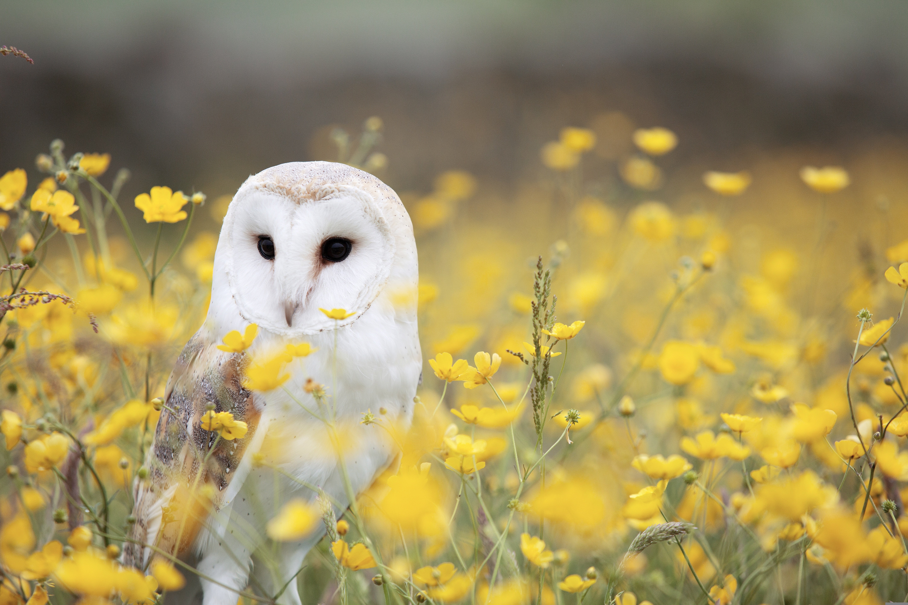

Barn Owl
These owls live in barns and have brown and white feathers to blend in with trees and common
areas. In 2024, ornithologists split the widespread Barn Owl, found on every continent except
Antarctica, into three species: American Barn Owl, Eastern Barn Owl, and Western Barn Owl.
American Barn Owl is restricted to the Americas, Eastern Barn Owl occurs from South Asia to
Australia, and Western Barn Owl is found in Europe, Africa, and western Asia.
American Barn Owls swallow their prey whole—skin, bones, and all. About twice a day, they cough
up pellets instead of passing all that material through their digestive tracts. The pellets make
a great record of what the owls have eaten, and scientists study them to learn more about the
owls and the ecosystems they live in.
Barn owls have excellent low-light vision, and can easily find prey at night by sight. But their
ability to locate prey by sound alone is the best of any animal that has ever been tested. They
can catch mice in complete darkness in the lab, or hidden by vegetation or snow out in the real
world.
The oldest known American Barn Owl lived in Ohio and was at least 15 years, 5 months old when it
died. Many people’s first sighting of an American Barn Owl is while driving through open country
at night—a flash of pale wings in the headlights is usually this species. These owls also often
live up to their name, inhabiting barns and other old, abandoned buildings, so keep an eye out
for them there. American Barn Owls don’t hoot the way most other owls do; you can listen for
their harsh screeches at night.